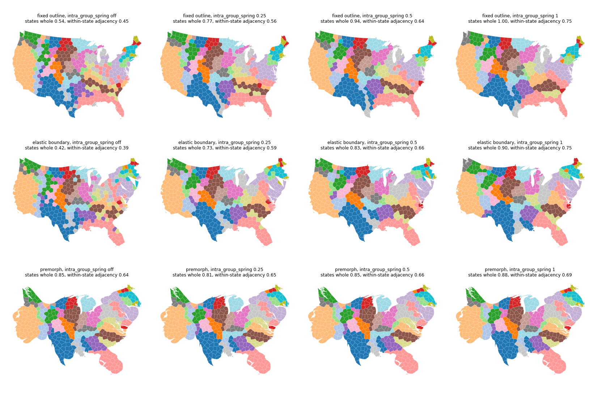
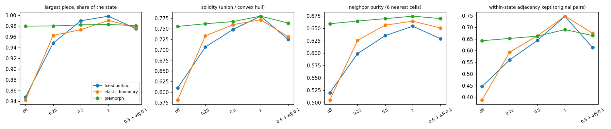
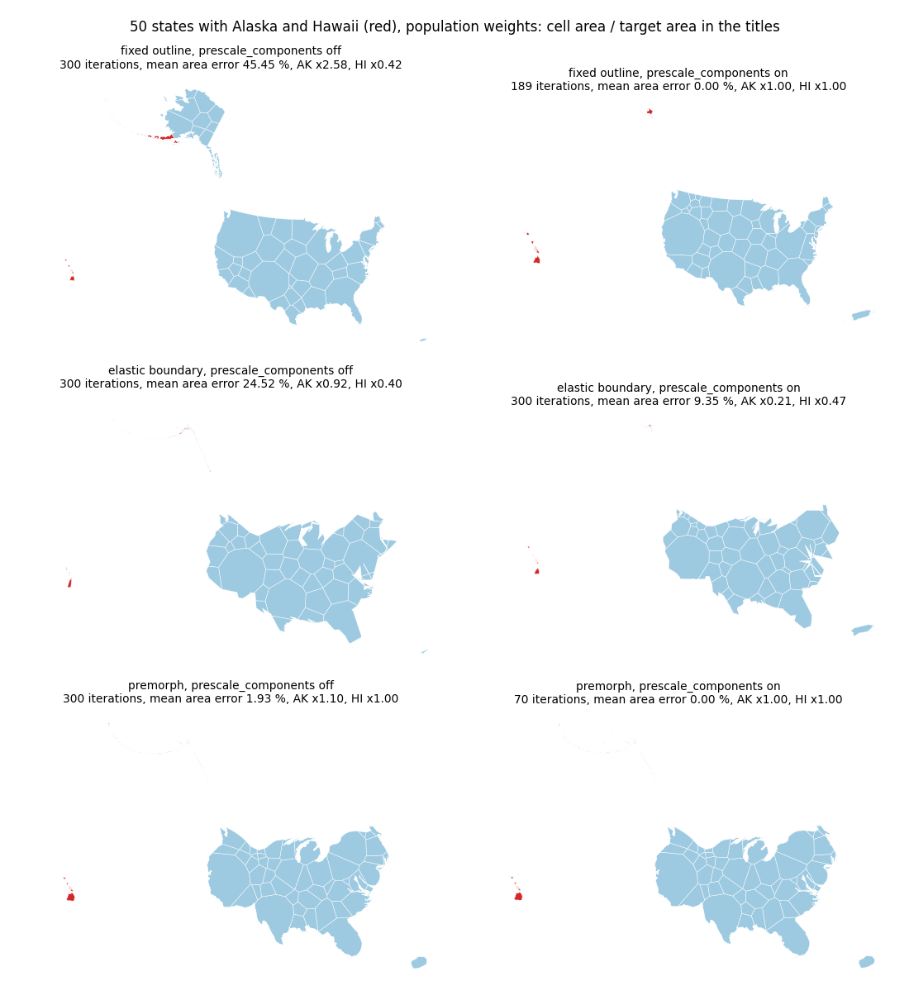

Premorph results for anchors 0, 0.25 and 0.5. Top: the 49 states with Texas (red), Louisiana (orange), Arkansas (green), Oklahoma (purple) and New Mexico (brown) highlighted. Bottom: the 432 districts colored by state.
Three questions the option audit left open. prescale_components is required for Alaska and Hawaii on every base (45 % area error without it on the fixed outline, 0 % with it), but the elastic base still fails on disconnected input. generator_anchor 0.25 is close to 0.5 on states and districts. intra_group_spring keeps states together on the fixed and elastic bases and is not redundant with the anchor there; premorph already keeps states together, so the spring adds little.
Run script run_followup.py (on the helpers of the audit) writes data/runs.jsonl; make_figures.py writes the figures and data/tables.md from it. Metrics are those of the audit page: area error is the cell area against the weight share of the total cell area, adjacency kept is the share of the input's adjacent pairs that are still adjacent, compactness is the mean 4 pi A / perimeter squared. For the groups (state) study, two kinds of metric are used:
The audit's four inputs were all connected, so it could not test this option. On A (disconnected parts of very different size):
| base | prescale | iterations | converged | mean error % | max error % | AK area / target | HI area / target | adjacency kept | time s |
|---|---|---|---|---|---|---|---|---|---|
| F | off | 300 | no | 45.45 | 550.1 | 2.58 | 0.42 | 0.32 | 10.7 |
| F | on | 189 | yes | 0.00 | 0.0 | 1.00 | 1.00 | 0.51 | 3.8 |
| E | off | 300 | no | 24.52 | 99.2 | 0.92 | 0.40 | 0.36 | 22.1 |
| E | on | 300 | no | 9.35 | 79.1 | 0.21 | 0.47 | 0.41 | 19.1 |
| P | off | 300 | no | 1.93 | 10.7 | 1.10 | 1.00 | 0.79 | 8.1 |
| P | on | 70 | yes | 0.00 | 0.0 | 1.00 | 1.00 | 0.81 | 2.7 |
| P | morph's prescale only | 104 | no | 3.49 | 26.6 | 1.00 | 1.00 | 0.79 | 4.6 |
| P | morph's and cells' prescale | 94 | yes | 0.00 | 0.0 | 1.00 | 1.00 | 0.79 | 3.2 |
VoronoiOptions.prescale_components is needed on every base. Without it the fixed outline ends with a mean area error of 45 % (Alaska 2.6 times its share, Hawaii 0.4 times) and the premorph run does not converge. With it the fixed outline and the premorph runs reach 0 % error, the premorph in 70 iterations instead of 300. The option keeps its place among the basic options for inputs with disconnected parts.premorph the pre-morph's own prescale_components (a MorphOptions field) is not enough: the cells' prescale is still what brings the error to zero.| data | anchor | iterations | Texas inside its morphed region | Texas shift (cell radii) | Louisiana shift | split cells | adjacency kept | compactness | median offset from the flow map | time s |
|---|---|---|---|---|---|---|---|---|---|---|
| S | 0 | 53 | 0.73 | 1.84 | 2.93 | 3 | 0.59 | 0.58 | 0.44 | 1.0 |
| S | 0.25 | 43 | 0.88 | 1.47 | 1.62 | 4 | 0.79 | 0.57 | 0.19 | 0.9 |
| S | 0.5 | 53 | 0.89 | 1.50 | 1.66 | 5 | 0.80 | 0.55 | 0.16 | 0.9 |
| D | 0 | 12 | 0.94 | 5.41 | 5.04 | 38 | 0.57 | 0.75 | 0.35 | 2.4 |
| D | 0.25 | 9 | 0.95 | 5.36 | 5.05 | 41 | 0.60 | 0.72 | 0.25 | 2.2 |
| D | 0.5 | 9 | 0.96 | 5.36 | 5.07 | 43 | 0.61 | 0.69 | 0.21 | 2.2 |
The audit ran this option once, on the districts with one setting (0.5 together with an adjacency spring of 0.1), and scored it with global adjacency, which cannot show whether groups stay together. Here: districts grouped by state, strength 0, 0.25, 0.5 and 1 on each base, scored with the cohesion metrics above (computed from the saved cells) next to the adjacency metrics.
| base | setting | iterations | states whole | largest piece | solidity | neighbor purity | within-state adj | between-state adj | all adj kept | compactness | time s |
|---|---|---|---|---|---|---|---|---|---|---|---|
| F | intra_group_spring off | 185 | 0.54 | 0.848 | 0.610 | 0.520 | 0.45 | 0.38 | 0.43 | 0.81 | 12.9 |
| F | intra_group_spring 0.25 | 94 | 0.77 | 0.948 | 0.707 | 0.599 | 0.56 | 0.26 | 0.48 | 0.78 | 7.8 |
| F | intra_group_spring 0.5 | 101 | 0.94 | 0.990 | 0.748 | 0.635 | 0.64 | 0.25 | 0.53 | 0.77 | 8.8 |
| F | intra_group_spring 1 | 108 | 1.00 | 0.999 | 0.780 | 0.654 | 0.75 | 0.20 | 0.59 | 0.77 | 9.3 |
| F | intra_group_spring 0.5 + adj 0.1 | 103 | 0.83 | 0.975 | 0.725 | 0.629 | 0.61 | 0.33 | 0.53 | 0.77 | 9.3 |
| F | adjacency_spring 0.1 | 173 | 0.52 | 0.857 | 0.630 | 0.530 | 0.44 | 0.45 | 0.44 | 0.79 | 13.3 |
| E | intra_group_spring off | 300 | 0.42 | 0.842 | 0.582 | 0.505 | 0.39 | 0.36 | 0.38 | 0.79 | 16.8 |
| E | intra_group_spring 0.25 | 300 | 0.73 | 0.963 | 0.733 | 0.625 | 0.59 | 0.24 | 0.49 | 0.78 | 19.2 |
| E | intra_group_spring 0.5 | 300 | 0.83 | 0.973 | 0.760 | 0.656 | 0.66 | 0.23 | 0.54 | 0.76 | 19.2 |
| E | intra_group_spring 1 | 300 | 0.90 | 0.991 | 0.771 | 0.664 | 0.75 | 0.19 | 0.59 | 0.75 | 20.6 |
| E | intra_group_spring 0.5 + adj 0.1 | 300 | 0.92 | 0.978 | 0.731 | 0.651 | 0.67 | 0.30 | 0.57 | 0.77 | 19.2 |
| E | adjacency_spring 0.1 | 300 | 0.52 | 0.905 | 0.638 | 0.552 | 0.48 | 0.44 | 0.47 | 0.79 | 18.0 |
| P | intra_group_spring off | 9 | 0.85 | 0.980 | 0.756 | 0.659 | 0.64 | 0.51 | 0.61 | 0.69 | 2.6 |
| P | intra_group_spring 0.25 | 10 | 0.81 | 0.980 | 0.762 | 0.665 | 0.65 | 0.50 | 0.61 | 0.69 | 3.3 |
| P | intra_group_spring 0.5 | 13 | 0.85 | 0.983 | 0.767 | 0.669 | 0.66 | 0.50 | 0.62 | 0.69 | 3.3 |
| P | intra_group_spring 1 | 300 | 0.88 | 0.983 | 0.780 | 0.674 | 0.69 | 0.48 | 0.63 | 0.68 | 29.2 |
| P | intra_group_spring 0.5 + adj 0.1 | 14 | 0.83 | 0.981 | 0.764 | 0.669 | 0.66 | 0.50 | 0.62 | 0.69 | 3.5 |
| P | adjacency_spring 0.1 | 10 | 0.83 | 0.980 | 0.756 | 0.659 | 0.64 | 0.52 | 0.61 | 0.69 | 3.1 |
intra_group_spring does what it is for. Without it a state's largest piece holds 0.85 of its area (fixed) and 0.84 (elastic), solidity is 0.61 and 0.58, and 0.52 and 0.51 of a cell's six nearest cells are in its own state. At 0.5 these are 0.99 / 0.75 / 0.64 (fixed) and 0.97 / 0.76 / 0.66 (elastic); at 1 they are 0.999 / 0.78 / 0.65 and 0.99 / 0.77 / 0.66. The share of states in one piece rises from 0.54 to 0.94 (F, 0.5) and from 0.42 to 0.83 (E, 0.5). It costs between-state adjacency (0.38 to 0.25 on F) and 0.04 of compactness; on the fixed outline it also converges in about half the iterations (101 against 185). The audit's verdict that the springs are "redundant with the anchor" does not hold here: the anchor is not used on these bases, and adjacency_spring alone does not keep groups together (largest piece 0.86 and 0.91, states whole 0.52).premorph the flow morph already keeps states together, and by the cohesion metrics it is as good as the fixed and elastic bases at their best even with the spring off: largest piece 0.98, solidity 0.756, neighbor purity 0.659 (fixed outline at strength 0.5: 0.99 / 0.748 / 0.635). The spring adds little (strength 1: 0.983 / 0.780 / 0.674). The adjacency numbers read lower for premorph at strength 1 (within-state 0.69 against 0.75) only because that metric counts the original polygons' neighbors: cells do not reproduce the adjacency graph of irregular districts even when they sit on the morphed layout (the flow morph itself keeps 100 % of the within-state pairs, the premorph cells 64 to 69 %). At strength 1 the premorph run does not converge in 300 iterations and takes ten times as long.
Premorph results for anchors 0, 0.25 and 0.5. Top: the 49 states with Texas (red), Louisiana (orange), Arkansas (green), Oklahoma (purple) and New Mexico (brown) highlighted. Bottom: the 432 districts colored by state.

Districts colored by state for each base and spring strength (off, 0.25, 0.5, 1). The titles give the share of states that stay in one piece and the within-state adjacency kept.

Largest piece, solidity, neighbor purity and within-state adjacency kept against the spring setting, per base.

Cells for A with Alaska and Hawaii in red, for each base without and with prescale_components. The titles give iterations, mean area error and the area of the Alaska and Hawaii cells relative to their weight share.